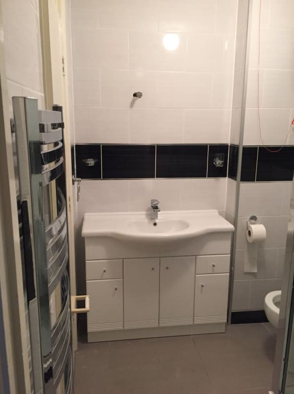
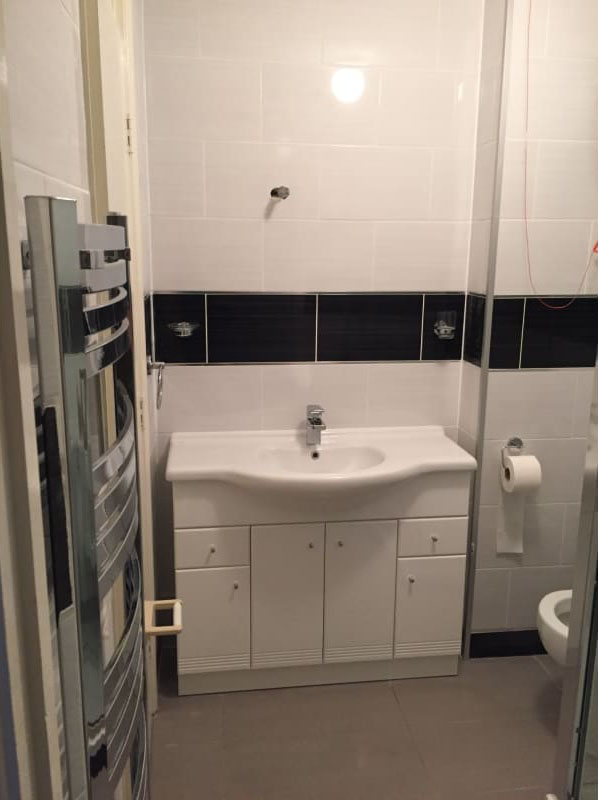
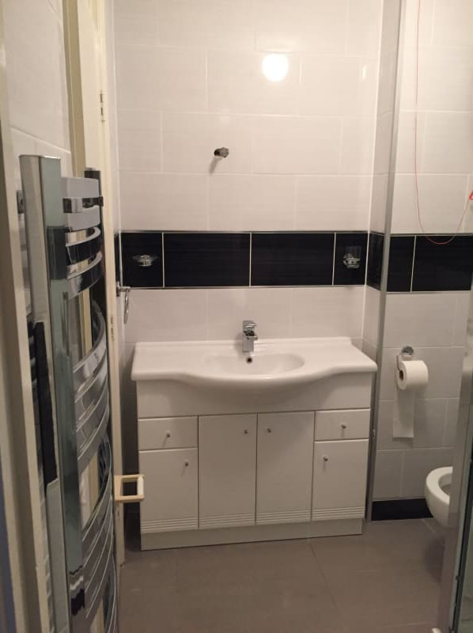

Designing a Room to cater for your needs can be a daunting experience so why not leave it to the experts, over the years we have encounterd rooms of all shapes and sizes, we know what fits and what does'nt. When you make the call to Paul Ryan Plumbing and Heating one of our members of staff will call round at your convenience discuss your needs and expectaions and draw up a plan for your room. If you already have a plan for you room we can offer Free Quatations and Competative prices.
for paragraph cause i cant fin loren ipsum p for paragraph cause i cant fin loren ipsum p for paragraph cause i cant fin loren ipsum p for paragraph cause i cant fin loren ipsum p for paragraph cause i cant fin loren ipsum p for paragraph cause i cant fin loren ipsum
When Building your new home, it is vital to choose a business you can rely on. Pick a business that has great feedback from previous customers, a competent plumber who will work methodically and to plan and who will be welcoming and obliging with other tradesmen on-site. Paul Ryan Plumbing and Heating are specialists with over 20 years' of knowledge and experience in the industry. We are always punctual, have an outstanding work ethic and trustworthy reputation. At Paul Ryan Plumbing and Heatin we strive to offer an excellent customer service.
